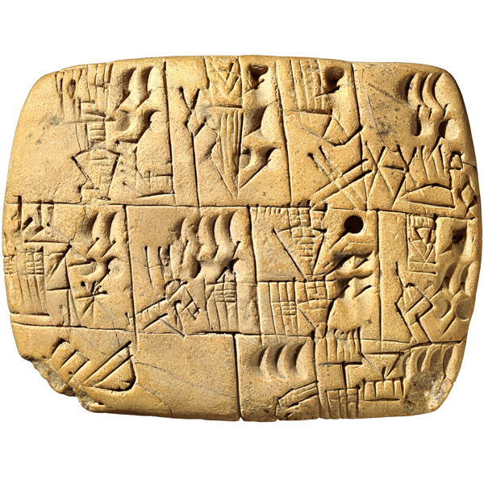

Thought in Motion
I recently had the opportunity to dip into the book, A History of the World in 100 Objects. It mentions one of my favourite objects in the British Museum: a 5100 year old Mesopotamian clay tablet that records the allocation of beer by administrators in the city of Uruk (I've written about this object before).
The chapter about this tablet explains how literacy was a catalyst for a fundamental change in human civilization. For the first time complex information could be recorded, checked and stored outside the human mind. It concludes with the following quote from the American philosopher John Searle:
"Writing is essential for the creation of what we think of as human civilization. It has a creative capacity that may not even have been intended. I think you don't understand the full import of the revolution brought by writing if you think of it just as preserving information into the future. There are two areas where it makes an absolutely decisive difference to the whole history of the human species. One is complex thought. There's a limit to what you can do with the spoken word. You cannot really do higher mathematics or even more complex forms of philosophical argument unless you have some way of writing it down and scanning it. So it's not adequate to think of writing just as a way of recording, for the future, facts about the past and the present. On the contrary, it is immensely creative. But there's a second thing about writing which is just as important: when you write down you don't just record what already exists, you create new entities - money, corporations, governments, complex forms of society. Writing is essential for all of them."
What does Searle mean when he states that writing creates new entities essential for complex society?
Try this example:
I am married to Mary and we have a piece of paper called a marriage certificate that proves we are. Somewhere else is written down an act of Parliament explaining how one obtains such a proof of matrimonial status along with definitions of terminology, responsibilities and activities in accordance with the custom of "marriage" in England and Wales.
Mary and I had to make vows (that are written down somewhere) in front of witnesses. Since neither of us is religious we had a civil marriage so a licensed registrar then spoke the specified words (that are also written down somewhere), "I now pronounce you husband and wife". It was only until these words were spoken by such a licensed person in accordance with the practices written down in the afore mentioned act of Parliament that Mary and I were married.
Immediately afterwards, we signed our names in a special register to record our marriage and duly received our marriage certificate. Sometimes we show the certificate to people in accordance with the practices and customs written down in other acts of Parliament to prove that we are, indeed, married.
In terms of the physical world, not a lot happened that was of great interest. An alien observer from another planet might describe the occasion as a group of hairless apes making sounds then scrawling marks on flattened dead tree.
The new entities and aspects of complex society that Searle is thinking of are, of course, those things that only exist in our human, social world.
The "truthiness" of my marriage, a certain act of Parliament or other such things does not come about in the same way that it is true to say that water boils at a certain temperature. Importantly, this doesn't make such things less true (I'm still married).
The mechanism for creating the truth of such social states of affairs is not the result of observing a natural phenomena (as a scientist might do in the case of the boiling point of water), rather, it is merely someone expressing some thing in some context. The registrar (someone) saying "I now pronounce you husband and wife" (some thing) at a wedding ceremony (some context) is how we became husband and wife. It is a special incantation. That it lacks physical properties or side effects is overcome by bureaucratic overhead (writing of a certificate to record our married state and other activities in accordance with written down laws - as I describe above). This is how writing creates complex forms of society.
Such performative statements (simply expressing them makes them true) don't have to be spoken by some official person as is the case at a wedding. Simply by writing them down can be enough. For example, the United States' twenty dollar bill has written on it, "This note is legal tender for all debts public and private". This makes it money! (Although I can't just write this on any old piece of paper and expect to get away with purchasing things with it - the "someone" making the statement and "context" of the statement are both wrong according to the terms set out by some other performative statement written down as a US law).
Put another way, it would seem bizarre to use this mechanism in the context of the physical world: I simply can't decree that water boils at a certain temperature because I say so and then issue a certificate to prove it! This mechanism only works when constructing facts in the human social world.
Does the social world have any effect on the physical world? Of course it does: the rules of football are social constructs yet govern how people should run around a field kicking a ball in a physical sense.
We share a culture, a form of life, a social world that exists by virtue of us being human and doing things humans do. This includes creating social constructs that only exist in such a social world via performative statements. It is only through our behaviour that evidence of such social constructs is manifested in the physical world (we run around a pitch kicking a ball in accordance with the socially constructed rules of football).
This is a key aspect Searle's argument: it requires humans to work. Someone must have written down such statements and others, collectively, need to have read, understood and acted as a result of comprehending such writing. This is, in a sense, is a movement of thought or intent between minds.
Of course, intentions and information can be shared via speech. Yet I believe Searle is correct to point out that literacy both records and creates such social entities that shape our collective behaviour that would be otherwise difficult or impossible to work with in a pre-literate society. Just imagine how hard it would be to keep track of the arguments in this blog post without the convenience of being able to re-read them. How would we keep track of complex laws? There's only so much anyone can commit to memory.
It's important to note that such movement of thought between minds is not just textual in nature: for example, it works when writing symbols in the musical and mathematical realms. I find it remarkable that I can enjoy the musical thoughts of a genius such as Beethoven almost 200 years after his death - I consider it a privilege when I think about the amount of effort spent to bring about such aural experiences.
Furthermore, it is possible to follow mathematical thought processes so long as you understand what the symbols represent and how they are to be manipulated. Take, 2+3=5 for instance. As any child will tell you, the "=" (equals) symbol means that what's written on its left is of equal quantity to what's written on its right. Furthermore, the "+" (sum) symbol indicates the quantities adjacent to its left and right should be added together (start at the highest quantity and count up the other-quantity-number-of-steps to find the result). Such mathematical literacy symbolically records thought processes that unfold in a deterministic manner (it's a formal system: if you understand the symbols, 2+3 must equal 5).
And so we get to the nub of this blog post:
Like us, Computers process symbols. These symbols are a sort of literacy (we write them down as code). Such symbols record our thoughts as algorithms (instructions used to achieve some useful end) or data (representation of information that can be easily manipulated by the computer).
To execute such algorithms or manipulate such data does not require a human - a computer will do. Computers are designed, created and operated by humans but the execution of the algorithm and manipulation of data is most definitely within the digital realm. This is, in a sense, a movement of thought, intent or information between (human) minds: I want to do X, so execute a program (written by another human) that brings about X but get a computer to do it for me (rather than a human).
For example, I want to buy a ticket to travel on the train to London. I used to have to ask a ticket clerk at the station to bring this about (assuming we both followed the conventions required for the purchase of a ticket). Today I can book online, print my tickets or even pick them up from an automated ticket machine with no human intervention at all.
I am not saying computers are minds (more on this in a later blog post). Merely, computers are a medium for the transmission of thought, intent or information (expressed as algorithms or data) in a similar way to how clay tablets or pen and paper are also a medium for the transmission of thought, intent or information (expressed as writing). The important distinction is that computers are active (they can execute the algorithm or manipulate the data) and clay tablets or pen and paper are passive (a human is required to act upon their content).
Perhaps this is the fundamental change of our time. We live in a social world where I can record my thoughts and not require a human for their content to be acted upon (for example, as a programmer I can write a train-ticket purchasing program for other people to use). The computer, in some sense, is the performative actor (rather than, say, the registrar at my wedding). In Searle's terms, the software is the someone expressing some thing ("you have a valid ticket to travel on such-and-such a train") in a computational context that we humans accept as valid (in the same way we accept a wedding as a valid context for a registrar to perform their duties).
Personally, I need to think about this further simply because I believe we (humanity) have not lived with computers long enough to comprehensively understand their role in our daily (social) lives. You might say that we're at the same stage with computers as the Mesopotamians were with writing when they created the clay tablet.
Interesting times ahead.
:-)
Image credits: Mesopotamian tablet © Trustees of the British Museum